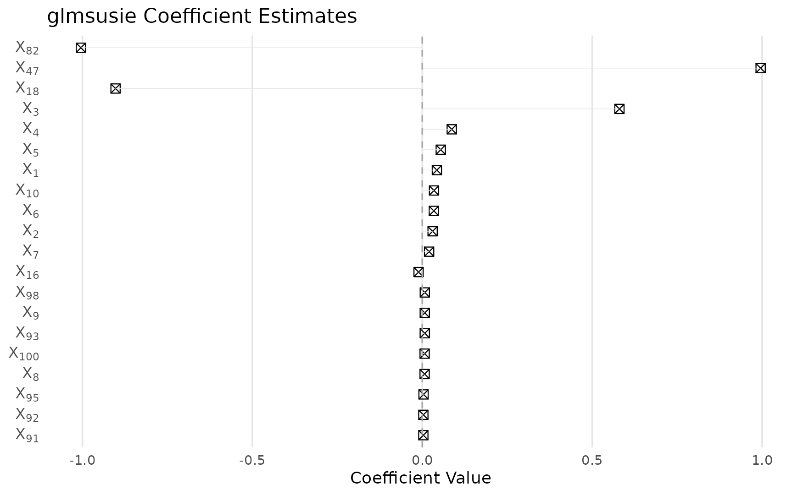
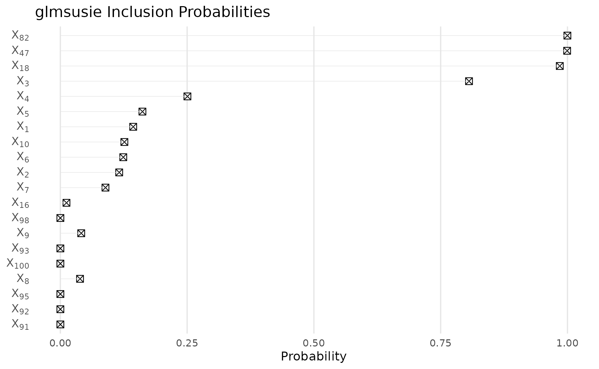
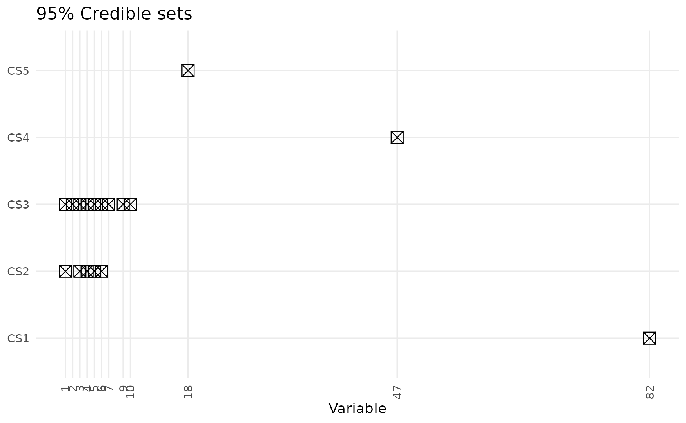
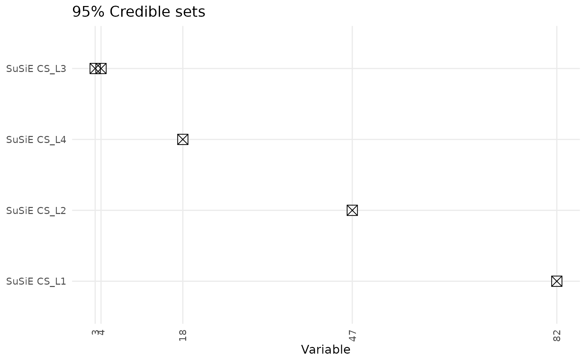

Gaussian Linear Regression with Correlated Predictors
Yizeng Li
2025-10-28
Source:vignettes/gaussian.Rmd
gaussian.RmdIntroduction
The glmsusie package implements the generalized sum of single effects (gSuSiE) model, which represents the overall effect as a sum of a small number of single-effect components. This approach extends the SuSiE method to generalized linear models.
In this vignette, we demonstrate gSuSiE’s performance with highly correlated predictors:
- Simulate a block-wise correlation structure with 100 predictors
- Apply gSuSiE to perform variable selection via
glmsusie() - Visualize coefficient estimates, posterior inclusion probabilities (PIPs), and credible sets (CSs)
- Compare performance against SuSiE
Simulate data
We generate n=5000 observations and p=100 predictors with block-wise correlation. Every 10 consecutive variables are highly correlated (\rho=0.98) within each block, while blocks are independent. Only 4 variables have nonzero effects, located in different correlation blocks.
set.seed(42)
n <- 5000 # sample size
p <- 100 # number of predictors
L <- 10 # number of single-effect components
block_size <- 10
n_blocks <- p / block_size
rho <- 0.98 # within-block correlation
# Create block-wise correlation matrix
Sigma <- matrix(0, p, p)
for (b in 1:n_blocks) {
block_idx <- ((b-1)*block_size + 1):(b*block_size)
# Within-block correlation matrix
block_corr <- matrix(rho, block_size, block_size)
diag(block_corr) <- 1
Sigma[block_idx, block_idx] <- block_corr
}
# Generate correlated predictors
X <- MASS::mvrnorm(n, mu = rep(0, p), Sigma = Sigma)
# True sparse coefficients (one per block, spread across different blocks)
theta_true <- rep(0, p)
theta_true[c(3, 18, 47, 82)] <- c(1, -1, 1, -1)
# Generate response
y <- drop(X %*% theta_true + rnorm(n, sd = 3))
cat("True nonzero coefficients at positions:", which(theta_true != 0), "\n")
## True nonzero coefficients at positions: 3 18 47 82
cat("True coefficient values:", theta_true[theta_true != 0], "\n")
## True coefficient values: 1 -1 1 -1Fit gSuSiE model
We allow up to L=10 single effects and use the default Gaussian family. The method is robust to larger L values with minimal overfitting risk.
# Load glmsusie library
library(glmsusie)
# Model fitting
fit <- glmsusie(
X = X,
y = y,
L = L,
family = gaussian()
)
summary(fit)
##
## Call:
## glmsusie(X = X, y = y, L = L, family = gaussian())
##
## Family: gaussian
##
## Coefficients: (sorted by PIP)
## Estimate PIP
## X82 -1.00455847 0.9999
## X47 0.99552173 0.9994
## X18 -0.90263767 0.9849
## X3 0.58003843 0.8059
## X4 0.08666866 0.2506
## X5 0.05426638 0.1618
## X1 0.04286195 0.1436
## X10 0.03441246 0.1262
## X6 0.03396987 0.1241
## X2 0.03030643 0.1160
## ... (90 more coefficients not shown)
##
## 95% Confidence Sets:
## Set Coverage
## cs1 {82} 0.9999
## cs2 {1, 3, 4, 5, 6} 0.9537
## cs3 {1, 2, 3, 4, 5, 6, 7, 9, 10} 0.9597
## cs4 {47} 0.9994
## cs5 {18} 0.9849
##
## Model converged after 3 iterations.
## Computation time: 15.95 seconds.Results
Coefficient estimates
The method successfully identifies the true signal locations despite high correlation within blocks:
plot(fit, which = "coefficients")
Posterior inclusion probabilities
Shows the probability that each variable is included in any single-effect component:
plot(fit, which = "probabilities")
95% credible sets
Each credible set contains variables where at least one is likely active with 95% confidence. Note how the method handles correlated variables within blocks:
plot(fit, which = "sets")
Performance evaluation
Compare predictive performance between methods:
# Prediction performance
rmse_glmsusie <- sqrt(mean(residuals(fit)^2))
# Compare with SuSiE
fit_susie <- susieR::susie(X, y, L = L)
fitted_susie <- fitted(fit_susie)
rmse_susie <- sqrt(mean((y - fitted_susie)^2))
performance <- data.frame(
Method = c("SuSiE", "gSuSiE"),
RMSE = c(rmse_susie, rmse_glmsusie)
)
print(performance)
## Method RMSE
## 1 SuSiE 3.008832
## 2 gSuSiE 3.009038SuSiE credible sets comparison
Examine the credible sets identified by SuSiE:
# SuSiE credible sets
cat("SuSiE Credible Sets:\n")
## SuSiE Credible Sets:
susie_sets <- fit_susie$sets$cs
if (length(susie_sets) > 0) {
for (i in seq_along(susie_sets)) {
cs_vars <- susie_sets[[i]]
cs_pips <- fit_susie$pip[cs_vars]
# Format variables with their PIPs
var_pip_strings <- paste0(cs_vars, " (PIP: ", round(cs_pips, 4), ")")
cat("CS", names(susie_sets)[i], "contains variables:",
paste(var_pip_strings, collapse = ", "), "\n")
}
} else {
cat("No credible sets identified by SuSiE\n")
}
## CS L1 contains variables: 82 (PIP: 0.9999)
## CS L2 contains variables: 47 (PIP: 0.9994)
## CS L4 contains variables: 18 (PIP: 0.9848)
## CS L3 contains variables: 3 (PIP: 0.7468), 4 (PIP: 0.2041), 5 (PIP: 0.028)Visualize SuSiE credible sets
# Create matrix for SuSiE credible sets visualization
if (length(susie_sets) > 0) {
# Create probability matrix for credible sets
susie_cs_matrix <- matrix(0, nrow = length(susie_sets), ncol = p)
for (i in seq_along(susie_sets)) {
cs_vars <- susie_sets[[i]]
# Use PIPs as probabilities for variables in the credible set
susie_cs_matrix[i, cs_vars] <- fit_susie$pip[cs_vars]
}
# Plot SuSiE credible sets using our plotting function
plot_cs_matrix(susie_cs_matrix,
row_labels = paste0("SuSiE CS_", names(susie_sets)),
alpha = 0.05)
} else {
cat("No SuSiE credible sets to visualize\n")
}